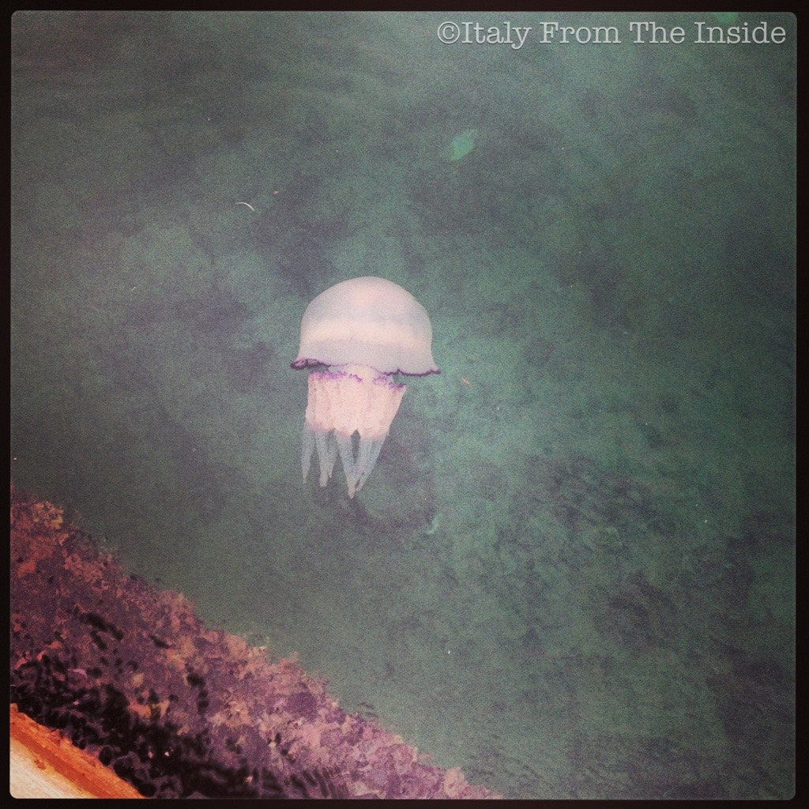

I've always been fascinated by jellyfish. I saw this one a winter day while I was walking by Piazza Unità (the largest European square overlooking the sea). Needless to say that, as much as I love jellyfish, if I ever see 10 pounds of jelly near me while I swim, you're going to hear my scream miles away...